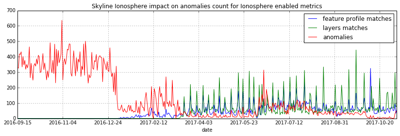

Ionosphere¶
Ionosphere is a story about time series.
Dedicated to my father, Derek, a man of numbers if there ever was one.
What Ionosphere is for - humble beginnings¶
YOU can teach a system.
YOU can help a system to LEARN.
You want to monitor metrics on small VPSs that do not do a great deal, meaning there is no high, rate constant work or 3sigma consistency in the metrics. There are 0 to 7 apache.sending a day, not 7000 a minute. Or there are some peaks on the metric stats_counts.statsd.bad_lines_seen

This is NOT ANOMALOUS
Even in massive, workload intensive, dynamic systems there are always some metrics that are low rate and relatively low range. And at 3sigma... that means noisy.
Ionosphere’s goal is to allow us to train Skyline on what is not anomalous and thereby compliment statistical 3simga means with some new methodologies of trying to “teach” the system. Of course teaching statistics algorithms something new is unfortunately not possible, but luckily teaching the system is possible. Giving the system better contextual data to work with is the key factor.
While a lot of work and research in the anomaly detection and machine learning domain is focused at automatically finding anomalies and getting it right, Skyline Ionosphere actually does somewhat of the opposite.
With Ionosphere we are training Skyline on what is NOT ANOMALOUS, rather than focusing on what is anomalous. Ionosphere allows us to train Skyline as to what is normal, even if normal includes spikes and dips and seasonality.
Overview¶
- Ionosphere gives the operator an input into Skyline to allow them to train it and compliment the existing statistical 3sigma anomaly detection methods.
- Ionosphere then starts to learn, retrospectively.
- Is Ionosphere the panacea for anomaly detection? No.
- Is Ionosphere immediately useful for web scale anomaly detection? No. Unless you are already doing web scale anomaly detection with Skyline, then still no. However over time yes. You cannot rush time series.
- Is Ionosphere a lot of work to train, yes.
- Ionosphere uses a time series similarity comparison method to compare two different time series for a metric.
- This method is based on summing the features that are calculated for the time series using tsfresh to “fingerprint” the data set.
- This allows the operator to fingerprint and profile what is not anomalous, but normal and to be expected, even if 3sigma will always detect it as anomalous.
- Ionosphere also allows for the creation of layers rules which allow the operator to define ad hoc boundaries and conditions that can be considered as not anomalous for each features profile that is created.
How well does it work?¶
This is a graph of the impact that Ionosphere has had on the anomaly count of ionosphere_enabled metrics before and after the deployment of Ionosphere.
It is clear that when the features profiles and layers are introduced and Skyline starts to learn, the anomaly counts for metrics that have been trained drop significantly, but it is not perfect.
Significant events which happen infrequently and change machine metrics significantly are still difficult to handle. Things like the occasional importing of a DB, reboots, zipping up a bunch of things, however layers do allow one to “describe” these events on metrics as normal should they so wish.
And Ionosphere does not make handling downtime and missing data points in metrics any easier, in fact it can make it harder.
“Do I want to train Skyline to think that the hole in this metric for 10 hours yesterday while OVH had 2 x 20 Kv lines down and generator problems in France, is normal? Maybe I should wait a week before training Skyline on any metrics that have been OVH’d...”
Deploying and setting Ionosphere up¶
Requires - Panorama to be enabled and running.
Ionosphere has a specific section of variables in settings.py that are
documented in the settings specific documentation see all the settings below:
settings.IONOSPHERE_CHECK_PATH- http://earthgecko-skyline.readthedocs.io/en/latest/skyline.html#settings.IONOSPHERE_CHECK_PATH
The Ionosphere settings follow normal Skyline settings conventions in terms of being able to paint all metrics with certain defaults and allowing for specific settings for specific or wildcard namespaces. If you know Skyline then these should all be fairly intuitive.
If you are new to Skyline, then by the time you have all the other Skyline apps set up and running you should have a more intuitive feel for these to after having spent some time looking over your running Skyline. You cannot rush time series :)
Ionosphere static demo pages¶
The demo pages show examples of how Ionosphere presents the operator with the metric’s details for the specific point anomaly and the all the Graphite metric graphs at multiple resolutions so that the operator can evaluation the anomaly in the full context of the metric’s history.
Graphs demo page - multiple resolution Graphite graphs for context¶
The demo page uses an edge case anomaly one which is not easy to decide whether it is or is not an anomaly.
Would YOU consider it anomalous or not? Would you want an alert?
Note that this is demo page is from an older version of Ionosphere before learn was introduced. So it does not give the operator the 2 options:
- Create features profile and DO NOT LEARN
- Create features profile and LEARN
It only gives the one option, however this demo page is about the multiple resolution Graphite graphs giving the operator context, so do not worry about the buttons, look at the graphs, see the Graphite :: graphs NOW section on the below demo page.
See Ionosphere static multiple resolution graphs demo page for a clearer picture (opens in a new browser tab). Is it anomalous or not anomalous?
Features profile demo page with matched graphs¶
This demo page shows an existing features profile with all the graph resources that the profile was created, see the Graphite :: graphs WHEN created :: at 7h, 24h, 7d and 30d section in the below demo page.
A series of matched graphs, showing the instances where Ionosphere has
analyzed the Mirage detected anomalous time series and found it be not
anomalous because the calculated features_sum of the Mirage anomalous
time series were within 1% difference of the features_sum :: 4764.3152004300
that was calculated for features profile 989 see
Graphite :: graphs MATCHED section in the below demo page.
See Ionosphere static features profile demo page with matched graphs for a clearer picture.
Features profile search demo page with generational information¶
See Ionosphere static search features profiles demo page with generation info for a clearer picture with generational, parent_id, number of times checked, number of times matched information.
Still interested?¶

Things to consider¶
Contextual anomalies - Earthquakes and Earth tremors¶
A point anomaly is only as contextually as the time frame in which it is considered to be anomalous in.
The following metaphor can be used to describe this concept. As this concept is important to understand in terms of Ionosphere and Mirage.
Let us take Bob as an example, Bob lived in the UK and decided to move to San Francisco because he landed a good job at a cool San Jose data analytics upstart. In the first week he is there, the Bay Area has a few Earth tremors, to Bob from the UK this is ANOMALOUS!!! Luckily Bob has a friendly co-worker called Alice and she directs him to http://earthquaketrack.com/us-ca-san-jose/recent and shows him it is not that anomalous, it is quite normal. Alice shows Bob to consider the context of these events in at a fuller duration.
- 5 earthquakes in the past 24 hours
- 5 earthquakes in the past 7 days
- 28 earthquakes in the past 30 days
- 381 earthquakes in the past 365 days
See also
Bob’s Hampshire earthquake data, if there is any...
And the penny drops for Bob that HERE in the Bay Area this is obviously this quite normal.
Bob then wonders to himself why he did not think about this before leaving his stable shire in the UK. He consoles himself by thinking “Well all the VCs and players are here...” so it obviously cannot be a big single point of failure.
bob = 'Skyline'
alice = 'You'
Skyline does not know all the contexts to the data, you do. Ionosphere lets us teach Bob that is not an earthquake!!! and enables Bob to look and ask, “Did Alice say this was not an earthquake, let me look”.
“Create” or “Create and LEARN”¶
With Ionosphere, you have the option to allow it to learn these things for itself, as long as you tell it what it is ALLOWED to learn at the fuller duration.
So Ionosphere gives you 2 options:

Only make a features profile based on the settings.FULL_DURATION data or the Mirage SECOND_ORDER_RESOLUTION_SECONDS
This is not an anomaly now or then or in the forseeable future if it
looks anything like the settings.FULL_DURATION or any of the multiple
resolution Graphite graphs, LEARN it at the learn_full_duration.
This means you do not have to ship that earthquake that happened 17 days ago into
Ionosphere’s features profiles and teach it BAD, badly. You can just tell it
to see the relevant Analyzer settings.FULL_DURATION or Mirage the
SECOND_ORDER_RESOLUTION_HOURS data as not anomalous and not learn at
the fuller duration of the metric’s learn_full_duration.
You can teach Ionosphere badly, but to unteach it is just a click of the Disable features profile button.
Use Ionosphere learning sparingly, although it is a feature, it will also generates an ongoing requirement for you to review and validate what it has learnt.
Skyline learning is not perfect. There are certain metrics that learning seems not to work as well on as other metrics, 5min and 15min load_average metrics fall into this category. Do not go overboard on learning do it slowly and incrementally. All LEARNT features profiles have the ability to be validated, however this is not a hard requirement, unvalidated features profiles will still be used in analysis, the validated flag is currently simply there to give the operation a view of what LEARNT features profiles have not been assessed to determine their accuracy. Skyline will also LEARN from an unvalidated features profile. Therefore the operator needs to review and validate or disable features profiles every so often, this can be achieved when reviewing and training on not anomalous patterns is done, whenever training data for a metric is assessed it is easy to review all features profiles for that metric during this phase by using the Existing :: features profiles page link on the training page and using the Ionosphere Validate page for side-by-side comparisons.
To begin with try and start with only creating features profiles and only implementing learning very occasionally when you are certain that a metric has a very “normal” pattern over 30 days. Initially just creating features profiles and not trying to learn on all of them, will give you a good idea of what Skyline Ionosphere is doing when you look at the Ionosphere matches pages and review matches. Having a few learn features profiles as well, will also give you a good idea of what is being done when Skyline is learning, when you look at the Ionosphere features profiles page and reviewing the learnt features profiles on the Search :: features profiles page.
Bad LEARNT features profiles¶
Due to Ionosphere using a settings.IONOSPHERE_LEARN_DEFAULT_MAX_PERCENT_DIFF_FROM_ORIGIN
percentage difference to learn with, it is going to get some learning wrong as
far as we humans are concerned. Due to the algorithm using a percentage
difference and not exact matches means that occasionally Ionosphere is going to
learn badly, which is often the case with load_avg metrics it seems and this
will also happen sometimes when there is missing data in a time series.
Ensure that you review and validate LEARNT features profiles often to ensure
that incorrect LEARNT features profiles are disabled as soon as possible.
The validate features profile page is useful for this. See Ionosphere validate features profile demo page
Warning
A important note on learning. When you let Ionosphere learn
you create a lot of work for yourself in terms of validating every learnt
profile that Ionosphere learns. If Ionosphere learns badly and you do not
keep up to date with validating learnt features profiles, Ionosphere could end
up silencing genuine anomalies which you would want to be alerted on.
The minimise and mitigate Ionosphere learning badly too many times, it is
possible to set the settings.IONOSPHERE_LEARN_DEFAULT_MAX_GENERATIONS
variable to 2 instead of the current default of 16 (as of v1.2.5), but as a
general rule of thumb, using learning sparingly and validate often.
How Ionosphere works - a simple overview¶
Firstly one needs to understand there is a chicken and egg aspect to Ionosphere. Which if you have read up to this point, hopefully you have already got that point.
Ionosphere has a number of roles that are centered on feature extractions, feature calculations and comparisons and a role centered on learning.
The features role¶
The features role is based on the sum of the calculated features of a time series. What are calculated features? Between 150 and 210 features are calculated, here are a few examples:
['value__minimum', '1507.1']
['value__maximum', '3806.75']
['value__median', '1853.95']
['value__count_above_mean', '474.0'],
['value__skewness', '2.1725548997']
['value__number_peaks__n_3', '121.0']
['value__longest_strike_above_mean', '42.0']
['value__first_location_of_minimum', '0.714285714286']
['value__last_location_of_minimum', '0.715277777778']
['value__absolute_sum_of_changes', '71195.65']
['value__augmented_dickey_fuller', '-5.85928430205']
['value__large_number_of_peaks__n_3', '1.0']
For the current full list of all features that are calculated see tsfresh_feature_names.TSFRESH_FEATURES
Ionosphere calculates the features and then then use the sum of these values.
- Ionosphere only analyses SMTP alerter enabled metrics.
- Once Ionosphere is enabled, if Analyzer or Mirage detect an anomaly on a
metric they:
- Save the training data set and the anomaly details
- If the metric is not an
ionosphere_enabledmetric and a SMTP alert enabled metric, an alert is triggered and all the created alert images are saved in the training data directory as well. - If the metric is an
ionosphere_enabledmetric, Analyzer and Mirage defer the time series to Ionosphere, via a check file, for Ionosphere to make a decision on. More on that below.
- Ionosphere serves the training data set for each triggered anomaly, ready for a human to come along in the Webapp Ionosphere UI and say, “that is not anomalous” (if it is not).
- At the point the operator makes a features profile, all the features values
that are created for the not anomalous time series are entered into the
database and the metric becomes an
ionosphere_enabledmetric, if it was not one already. - All the anomaly resources are then copied to the specific features profile directory that is created for the features profile.
- Once a metric is
ionosphere_enabled, both Analyzer and Mirage will refer any anomalies found for the metric to Ionosphere instead of just alerting. - When a 3sigma anomalous time series is sent to Ionosphere, it calculates the
features with tsfresh for the 3sigma anomalous time series and then compares
the common features sums with those of previously recorded features profiles.
If the two values are less than
settings.IONOSPHERE_FEATURES_PERCENT_SIMILAR, Ionosphere will deem the time series as not anomalous and update the related training data as MATCHED and update the features profile matched count in the database. - If the values are not matched Ionosphere will apply Min-Max scaling (ONLY if
the features profile time series and the anomalous time series are of a
similar range) and try the same technique with temporary Min-Max scaled time
series from the original features profile time series (which is stored in the
database) and the 3sigma anomalous time series. It creates a features profile
for each Min-Max scaled (standardized) time series and then compares the
features sums and determines whether the difference is below the
settings.IONOSPHERE_FEATURES_PERCENT_SIMILARand will deem it as not anomalous and update the related training data as MATCHED and update the features profile matched count in the database. - If Ionosphere does not find a features profile match, it analyses the time series against any defined layers, if there are any and if a match is found Ionosphere will deem the time series as not anomalous and update the related training data as MATCHED and update the features profile layers matched count in the database.
- If Ionosphere does not find a match, it tells the originating app
(Analyzer or Mirage) to send out the anomaly alert with a
[Skyline alert] - Ionosphere ALERTsubject field.
The learning role¶
- Once a features profile has been made for a metric with the LEARN option, for
every unmatched anomaly that training_data is created for, after the
learn_valid_ts_older_thanseconds have been reached, Ionosphere will attempt to “learn” whether the anomalous event afterlearn_valid_ts_older_thanseconds and any subsequent aggregation has had time to occur, if the time series features atlearn_full_durationseconds match any feature profiles that were created for the metric at thelearn_full_duration. - If Ionosphere finds a match to the features calculated from the metric
time series that it surfaces from Graphite at
learn_full_duration, it will use the anomaly training data to create a features profile for the metric at the metric’ssettings.FULL_DURATIONorSECOND_ORDER_RESOLUTION_HOURS(whichever is applicable) and it will also create a features profile with thelearn_full_durationdata that matched, as long as thesettings.FULL_DURATIONorSECOND_ORDER_RESOLUTION_HOURSfeatures sum difference is within thesettings.IONOSPHERE_LEARN_DEFAULT_MAX_PERCENT_DIFF_FROM_ORIGINor the metric specificmax_percent_diff_from_origin
Note
Ionosphere does not currently use Min-Max scaling in the learning role, the learnt features profiles are only created with the time series at the original scale.
Input¶
When an anomaly alert is sent out via email, a link to the Ionosphere training data is included in the alert. This link opens the Ionosphere UI with the all training data for the specific anomaly where the user can submit the metric time series as not anomalous and have Skyline generate a features profile with tsfresh (and optionally some additional layers, which are covered further down on this page).
features profiles¶
When a training data set is submitted as not anomalous for a metric a features
profile is extracted from the time series using tsfresh. This features profile
contains the values of 210 features (currently as of tsfresh-0.4.0), such
as median, mean, variance, etc, for a full list of known features that are
calculated see tsfresh_feature_names.TSFRESH_FEATURES.
This features profile is then stored in the Skyline MySQL database in the following manner. For every metric that has a features profile that is created, 2 MySQL InnoDB tables are created for the metric.
- The features profile details are inserted into the ionosphere table and the features profile gets a unique id.
- z_fp_<metric_id> - features profile metric table which contains the features profile id, feature name id and the calculated value of the feature.
- z_ts_<metric_id> - the time series data for the metric on which a features profile was calculated.
These tables are prefixed with z_ so that they are all listed after all core
Skyline database tables. Once a metric has a z_fp_<metric_id> and a
z_ts_<metric_id> table, these tables are updated with any future features
profiles and time series data. So there is are 2 tables per metric, not tables
per features profile.
How Ionosphere is “learning”?¶
Ionosphere may have had humble beginnings, but adding this seemingly trivial function was anything but humble, simple or easy. So to solve the seemingly simple problem, something completely new had to be pieced together.
Ionosphere “learns” time series and makes decisions based on a time series similarities comparison method using the tsfresh package.
This “learning” is base upon determining the similarities in time series that could be best described as attempting to determine how similar 2 time series are in terms of the amount of “power/energy”, range and “movement” there is within the time series data set. A fingerprint or signature if you like, but understand that neither are perfect. This time series similarities comparison method is not perfect in the dynamic, operational arena, but it achieves the goal of being useful. However, it must be stated that it can be almost perfect, a tsfresh features profile sum is (about as) perfect as you can get at 0% difference (there may be edge cases). However using it with 100% matching is not useful to learning and trying to profile something like the Active Brownian Motion (for want of a better way of explaining it). Lots of dynamic metrics/systems will exhibit a tendency to try an achieve Active Brownian Motion, not all but many and definitely at differing and sometimes multiple seasonality.
For a very good overview of Active Brownian Motion please see the @kempa-liehr description at
See also
https://github.com/blue-yonder/tsfresh/pull/143#issuecomment-272314801 - “Dynamic systems have stable and unstable fixed points. Without noise these systems would be driven to one of their stable fixed points and stay there for ever. So, fixed points resemble an equilibrium state”
Ionosphere enables us to try and profile something similar to Active Brownian Motion as the norm, again for want of a better way of trying to explain it.
Note
Ionosphere does not use Min-Max scaling in the learning context
However, contextually, Ionosphere nor the tsfresh implemented method, will ever be perfect, unless 2 time series have identical data, consistently, without change. But how challenging would that be? :)
Also it may be possible that an identical time series reversed may give the same or negative of a features sum and a mirror image time series can have very similar calculated feature sums.
Anyway, it is not perfect, by design. Evolution tends to not achieve perfection, attaining a working, functional state is usually the norm in evolution it seems.
Evolutionary learning - generations¶
Ionosphere uses an evolutionary learning model that records (and limits) the
generations of trained and learnt features profiles per metric. Limits can be
set in settings.py and played around with. For veterans of Skyline, these
tend to be much like settings.CONSENSUS, what is the correct CONSENSUS?
They are tweak and tunable. Keep them low, you give Ionosphere less leverage to learn. But you will bump them up so that it can learn more and better.
Although this documentation may seem overly chatty and verbose, all things have stories. And why should documentation be overly dull, try explaining Skyline to someone, good luck. You should see me at parties. Anyway not many people read this, so it does not really matter :)
If you want to understand Skyline more, look at the code. But be gentle :)
Or better yet, set it up. Being able to teach a system and see it learn it pretty cool, just look at https://github.com/xviniette/FlappyLearning and NeuroEvolution.js (thanks for the inspiration from @nylar and @xviniette)
Lots of Skyline concepts are easy enough to get, some are not so easy and when they are all tied together with a splash of seasonality and a dash of similarities, it gets quite complicated.
However, all Skyline pieces, individually, are relatively simple. Seeing them work helps or hinders depending on your outlook... “Shit lots of stuff is anomalous” can often lead to lots of work, debugging, fine tuning and making better or polishing a turd or diamante.
DISABLED features profiles¶
Ionosphere learning is not perfect, sometimes it will get it wrong as far as a human is concerned. Luckily that does not happen often, but it will happen.
Ionosphere lets the operator disable any features profile that they deem as anomalous. This can be due to a features profile having been LEARNT and the operator thinks it to be anomalous or an operator could create a features profile that they decide was in error, this can especially be true when on re-evaluating after creating with the “and LEARN” option enabled, but looking at the 30 day data and thinking... “hmmm actually I do not really want it to learn that spike from 2 weeks ago”.
If a features profile is DISABLED, all its progeny features profiles are disabled as well. This ensures that every features profile was LEARNT from the profile and any that were LEARNT from any of them are disabled too so that the pattern is removed from evaluation during analysis of the metric in the future.
Layers¶
Ionosphere allows the operator to train Skyline a not anomalous time series in terms of generating a features profile to be compared to anomalies in the future, however Ionosphere also allows the operator to define “layers” rules at the time of feature profile creation.
Layers rules allow us to train Skyline on boundaries as well, on the fly via the
UI at the time of features profile creation, which puts all the work for the
operator in the one place. Think of them as metric AND feature profile specific
algorithms. A layer should only ever be used to describe the features profile
and ONLY at settings.FULL_DURATION time series. The operator should
limit their layers values to within acceptable bounds of the range within the
features profile. The operator should not try and use a single layer to try and
describe the entire range they “think” the metric can go to, a layer is meant to
match with a features profile, not a metric, however see the Matching
approximately close section immediate below. If this methodology is followed,
layers and features profiles “retire” around the same time as metrics change
over time, an old features profile that no longer describes the current active
motion state will no longer ever be matched, neither should its layers. One of
the things some way down the road on the Ionosphere roadmap is
Feature #1888: Ionosphere learn - evolutionary maturity forget
Layers were added to reduce the number of features profiles one has to train Skyline on. They were introduced for humans and to make it easier and more useful. However they come at a cost. Every layer created reduces Ionosphere’s opportunities to be trained and learn. It is a compromise to save on the amount of monkeys you have to have or need to be to train Skyline properly. Unfortunately someone has to be the monkey, but for every features profile/layer you create, you create a Skyline monkey to watch that. A monkey with fairly simple instructions.
A layer consist of a series of simple algorithms that are run against a time series after Analyzer/Mirage and Ionosphere features comparisons.
Note
It is IMPORTANT to understand that layers are only evaluated against
the settings.FULL_DURATION time series, regardless if it is a Mirage
metric being checked. The operator should define their layers values in
relation to the Redis graph that is presented in the Train :: layers section
and to the Last :: 30 datapoints :: at FULL_DURATION section just below that
section, to ensure they are using relevant ranges.
Matching approximately close¶
The settings.IONOSPHERE_LAYERS_USE_APPROXIMATELY_CLOSE variable
enables a margin of tolerance to be applied to layers D and E. This is enabled
by default and D and E boundary limits are matched if the value is approximately
close to the limit. This is only implemented on boundary values that are > 10.
The approximately close value is calculated as 10 percent for limit values
between 11 and 29 and within 5 percent when the limit value >= 30. It is only
applied to the D layer with a ‘>’ or ‘>=’ condition and to the E layer with a
‘<’ or ‘<=’ condition. This makes the layers more effect and means that if a
limit on a layer is set to 52 and the data point is 53, the layer will match
and you probably want it to as well. If approximately_close is not used you
will find it frustrating the number of times an anomaly is triggered where it
did not match a layer by small margin.
How layers are defined¶
The layers are defined as:
D layer [required] if last_datapoint [<, >, ==, !=, <=, >=] x
DISCARD - not_anomalous False
The D layer can be used as the upper or lower limit, e.g if value > x (probably or certainly anomalous). Or this can be used if this metric operates in the negative range or if you want it too not discard on 0 as you want to match 0, set it to -1 or > 0.1 or > 1. On a high constant rate metric the D layer can be used to discard if < x so the the layer does not silence a drop. This layer can be complimented by the optional D1 layer below. Remember a match here disables any of the other below layers being checked
D1 layer [optional] if datapoint [<, >, ==, !=, <=, >=] x in the last y values in the time series
DISCARD - not_anomalous False
The D1 layer can be used as an upper or lower limit, so the D layer does not silence a drop. Remember a match here disables any of the other below layer conditions from being checked.
E layer [required] if datapoint [<, >, ==, !=, <=, >=] x in the last y values in the time series
not anomalous
The Es, F1 and F2 layers shall not be discussed as NOT IMPLEMENTED YET.
An example layer
For instance, say occasionally we can expect to see a spike of 404s status codes on a web app due to bots or your own scanning, with layers we can tell Ionosphere that a time series was not anomalous if the datapoint is less than 120 and has values in the last 3 datapoints is less than 50. This allows for a somewhat moving window and an alert that would be delayed by say 3 minutes, but it is a signal, rather than noise. Let us describe that layer as gt_120-5_in_3
To demonstrate how the above layer would work, an example of 404 counts per minute:
D layer :: if value > 120 :: [do not check] :: ['ACTIVE']
D1 layer :: if value none none in last none values :: [do not check] :: ['NOT ACTIVE - D1 layer not created']
E layer :: if value < 5 in last 3 values :: [not_anomalous, if active Es, F1 and F2 layers match] :: ['ACTIVE']
Es layer :: if day None None :: [not_anomalous, if active F1 and F2 layers match] :: ['NOT ACTIVE - Es layer not created']
F1 layer :: if from_time > None :: [not_anomalous, if active F2 layer matchs] :: ['NOT ACTIVE - F1 layer not created']
F2 layer :: if until_time < None :: [not_anomalous] :: ['NOT ACTIVE - F2 layer not created']
Apply against
13:10:11 2
13:11:11 0
13:12:11 8
13:13:11 60
13:14:11 0
With the above described layer, this would be classified as not anomalous, however if the data was:
13:10:11 2
13:11:11 0
13:12:11 800
The layer would not ever report the time series as not anomalous as the 800 exceeds the gt_120, so the rest of the layer definition would not be evaluated.
Warning
Layers may seem simple, but the layers must be thought about carefully as it is possible for a metric to have multiple layers created on multiple features profiles, that could silence any anomalies on the metric. Specifically D layer, however layer D1 was added to remove this possibility, if the layers are properly implemented. The D1 layer is optional (and is reverse capable with with any existing layers that were created prior to 1.1.3-beta) and is there to let the operator set upper and lower bounds where necessary.
Be careful that you do not create another layer later that silences bad, e.g. dropped to 0, the above example is not a good example of that as we want and expect 0 on the 404 not found generally, but if it was status code 200, we would not want any layers silencing a drop to 0, please try and use layer D1 wisely where required.
However, in this example, if you want to ensure that your 200 status code count does not hit 0 or drop off a cliff, you would configure Boundary to watch it.
No machine learning¶
Ionosphere brings no machine learning to Skyline per se. It is merely making programmatic decisions based on the data it is provided with, things a human operator tells it are not anomalous. Ionosphere is an attempt to give Skyline an Apollo Program refit. Enabling the pilots to take control, have inputs.
For Humans¶
If Ionosphere achieves the sentiments expressed in Brian L. Troutwine @bltroutwine seminal Belgium 2014 devopsdays presentation, then it has achieved a goal.
- Automation with Humans in Mind: Making Complex Systems Predictable, Reliable and Humane - https://legacy.devopsdays.org/events/2014-belgium/proposals/automation-with-humans-in-mind/
- video - http://www.ustream.tv/recorded/54703629
Ionosphere first and foremost was created to give this dimension of human piloting where necessary. Giving Skyline that ability to allow human input in some from to “teach” Skyline what is not anomalous comes with a number additional benefits, like giving the Skyline the information needed to learn how to make decisions based on the input data it is provided within.
The initial goal has been achieved, but it comes at a price. Everything has a
cost and here the cost is the operator needs to
train_ionosphere_learn == time_in_seconds # about 12 seconds.
Ionosphere can only be activated by the input from a human neocortex to tell it what is not anomalous. Some brain CPU cycles, opening emails and clicks, assess 1 or 2 more clicks. It is not easy, however that said it is effective at what it set out to achieve.
Current state¶
It appears that Ionosphere is better at doing what it was intended for than doing what it was not intended for. All time series not being created equal.
Ionosphere does low range, low rate metrics very well.
Ionosphere does them better than high rate, highly variable metrics, when it saw
first light at least. This is not to say that it does not do high rate, highly
variable metrics, it just needs a lot more features profiles for the metric
describing what is not anomalous. However it is possible that a larger
settings.IONOSPHERE_LEARN_DEFAULT_MAX_PERCENT_DIFF_FROM_ORIGIN or metric
specific max_percent_diff_from_origin may work quite well on large volume
and high variability metrics, time will tell.
Over the fullness of time and data, these learning efficiency metrics will be available via the database data for analysis.
UPDATE - using Min-Max scaling Ionosphere now handles high range, highly variable metrics much better.
tsfresh¶
The tsfresh package and features extraction functions, enabled this ability of features calculation on a wholesale scale, without having to design lots of algorithms to calculate the time series features for. The tsfresh package enabled Ionosphere to happen much FASTER, it calculates all the features that are required to make this method viable and work. They said:
"Spend less time on feature engineering"
They were not wrong. Skyline has added a lot of “checks” to ensure consistency in the tsfresh calculated features so that a features profile is not affected by any changes that may be implemented in the tsfresh package. All of this has been pushed back into tsfresh and may be one of the reasons why the actual development of Ionosphere took so long, but you cannot rush time series.
This overview of Ionosphere could not be complete without a special thanks to the tsfresh people @MaxBenChrist, @nils-braun and @jneuff who are some of nicest people in open source, on par with @astanway :)
Thanks to blue-yonder for supporting the open sourcing of tsfresh.
memcached¶
Ionosphere uses memcached and pymemcache (see https://github.com/pinterest/pymemcache) to cache some DB data. This optimises DB usage and ensures that any large anomalous event does not result in Ionosphere making all the DB metrics become anomalous :)
The architectural decision to introduce memcached when Redis is already available, was done to ensure that Redis is for time series data (and alert keys) and memcached isolates DB data caching. The memcache data is truly transient, where as the Redis data is more persistent data and memcached is a mature, easy to use and well documented.
Cached data¶
Ionosphere caches the following data:
- features profile features values from the z_fp_<metric_id> table - no expiry
- metrics table metric record - expire=3600
- metric feature profile ids - expire=3600
- features profile features time series from the z_ts_<metric_id> table - no expiry
Note
due to caching a metric and a features profile can take up to 1 hour to become live.
Operational considerations¶
No UI data update method¶
There is no method to modify the DB data via the UI. If you want to make any
changes, they must be made directly against the DB. Deleting features profiles,
changing any of the metrics values once set for metrics e.g.
learn_full_duration, learn_valid_ts_older_than, max_generations or
max_percent_diff_from_origin
Backup¶
- Backup the MySQL DB to another machine or better slave it and backup the slave.
- rsync backup /opt/skyline/ionosphere/features_profiles to another machine, frequently (for the time being, until autobuild is available, however autobuild will not a able to recreate all the resources, but most).
MySQL configuration¶
There could be a lot of tables. DEFINITELY implement innodb_file_per_table
in MySQL.
Ionosphere - autobuild features_profiles dir¶
Warning
autobuild - TBD at some point in the future, for now see the Backup section above.
The number of features_profiles dirs that Ionosphere learn could spawn and the amount of data storage that would result is unknown. It is possible the operator is going to need to prune this data a lot of which will probably never be looked at. Or a Skyline node is going to fail, not have the features_profiles dirs backed up and all the data is going to be lost or deleted. So it is possible for Ionosphere to created all the human interrupted resources for the features profile back under a best effort methodology. Although the original Redis graph image would not be available, nor the Graphite graphs in the resolution at which the features profile was created, however the fp_ts is available so the Redis plot could be remade and all the Graphite graphs could be made as best effort with whatever resolution is available for that time period.
This allows the operator to delete/prune feature profile dirs by possibly least matched by age, etc or all and still be able to surface the available features profile page data on-demand.
Note
expire features profiles older than? Ionosphere forget.